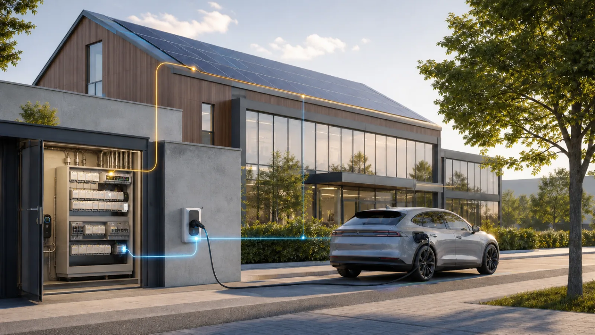
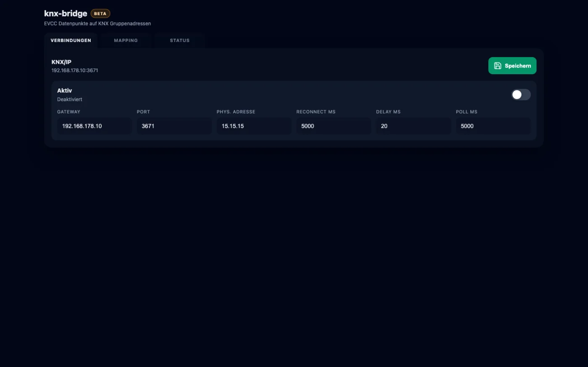

Wenn Gebäude und Energie dieselbe Sprache sprechen
KNX verbindet seit vielen Jahren Gewerke wie Beleuchtung, Beschattung, Heizung und Raumautomation. Gleichzeitig kennt evcc die aktuellen Energieflüsse rund um Netz, Photovoltaik, Batteriespeicher, Fahrzeuge und Ladepunkte. Die KNX Bridge bringt beide Welten zusammen.
Damit können ausgewählte Informationen aus evcc dort verfügbar werden, wo Gebäudeautomation ohnehin stattfindet: auf KNX-Gruppenadressen. Je nach Datenpunkt und Konfiguration ist auch der Weg zurück zu evcc vorgesehen. So entsteht eine gemeinsame Basis für Visualisierung, Logik und Automationen.
Was die aktuelle Beta bereits mitbringt
- KNX/IP verbinden: Gateway, Port und physikalische Adresse lassen sich über eine Weboberfläche konfigurieren.
- evcc-Datenpunkte finden: Die Bridge scannt verfügbare Werte und stellt sie für das Mapping bereit.
- Frei zuordnen: Datenpunkte können passenden KNX-Gruppenadressen und Datenpunkttypen zugewiesen werden.
- Richtung bestimmen: Vorgesehen sind evcc zu KNX, KNX zu evcc und – für geeignete Werte – bidirektionale Mappings.
- Zyklisch übertragen: Werte lassen sich bei Bedarf in konfigurierbaren Intervallen senden.
- Direkt prüfen: Eine Testfunktion unterstützt die Inbetriebnahme einzelner Zuordnungen.
- Status sehen: Verbindung, Scan, aktive Mappings und Logs werden übersichtlich dargestellt.

Was damit möglich wird
Die spannendsten Anwendungen entstehen dort, wo Energieinformationen in bestehende Gebäudelogik einfließen. Denkbar sind beispielsweise KNX-Visualisierungen für PV-Leistung, Netzbezug, Batteriestand oder Ladezustände. Auch Regeln, die auf Energieüberschuss, Ladebetrieb oder verfügbare Leistung reagieren, lassen sich damit gezielter umsetzen.
Welche Datenpunkte sinnvoll sind und welche Schreibzugriffe wir freigeben, prüfen wir bewusst in der Praxis. Gerade bei Steuerbefehlen stehen nachvollziehbares Verhalten, sichere Grenzen und eine robuste Fehlerbehandlung im Vordergrund.
Ein weiterer Baustein für die offene eHive Plattform
Die KNX Bridge folgt demselben Ansatz wie eHive One: lokal, offen und herstellerübergreifend. Bestehende KNX-Anlagen müssen nicht durch ein neues Automationssystem ersetzt werden. Stattdessen ergänzt die App sie um ausgewählte Daten und Funktionen aus dem Energiemanagement.
So wächst eHive über Wallbox, PV und Speicher hinaus tiefer in das intelligente Gebäude – ohne die klare Trennung der Systeme aufzugeben.
Beta läuft – Tester gesucht
Die KNX Bridge befindet sich noch in Entwicklung. Für die nächsten Schritte suchen wir Tester mit einem eHive- beziehungsweise evcc-System und einer erreichbaren KNX/IP-Schnittstelle. Besonders interessant sind reale Wünsche aus Wohngebäuden, Gewerbe und kleineren Energieprojekten.
Schreib uns am besten kurz, welches KNX/IP-Gateway du nutzt, welche evcc-Werte du auf KNX bringen möchtest und ob du ausschließlich visualisieren oder auch Werte in Richtung evcc übertragen willst.
Jetzt Interesse am KNX-Betatest anmelden
Hinweis: Die KNX Bridge ist Beta-Software. Funktionsumfang, unterstützte Datenpunkte und Schreibzugriffe können sich bis zur allgemeinen Veröffentlichung ändern. Produktive Steuerungen müssen fachgerecht geplant, geprüft und abgesichert werden.